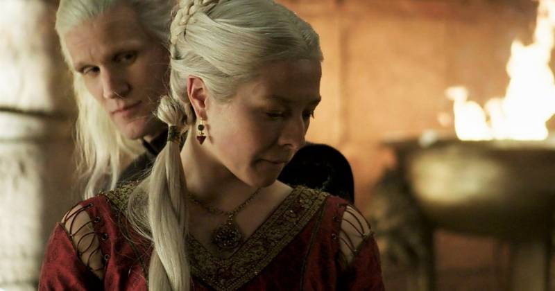
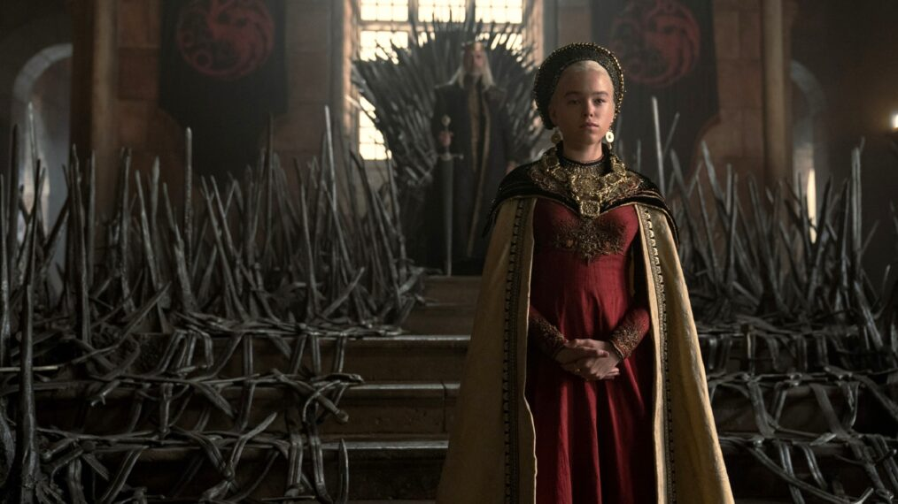

GIA TỘC RỒNG, PHẦN TIỀN TRUYỆN HẤP DẪN CỦA SERIE TRÒ CHƠI VƯƠNG QUYỀN
Phần tiếp theo được chờ đợi của siêu phẩm truyền hình Trò chơi vương quyền vừa mới ra mắt vào ngày 21-8 trên kênh HBO và đã nhận được rất nhiều phản hồi tích cực
phim Gia tộc Rồng (House of the Dragon)

Người kế vị Ngai Sắt là nữ giới trong Gia tộc Rồng
Gia tộc Rồng (House of the Dragon) là phần tiếp theo của serie phim Game of Thrones (Trò chơi vương quyền 2011 – 2019). Cả hai bộ phim đều dựa theo bộ tiểu thuyết A Song of Ice and Fire của tác giả George R. R. Martin.
Kịch bản của Gia tộc Rồng được George Martin và Ryan Condal viết riêng cho HBO, dựa trên cuốn Fire & Blood, nằm trong serie tiểu thuyết này.
Đây là phần tiền truyện của Game of Thrones, với các sự kiện diễn ra trước đó 200 năm. Phần này mô tả sư kết thúc của nhà Targaryen, dẫn tới cuộc nội chiến giành quyền kế thừa, được biết tới trong cuốn tiểu thuyết thứ 5 Dance of the Dragons.

Đây là tập đầu tiên trong số 10 tập phim của mùa 1 House of the Dragon.
Trong những năm cuối cùng tại vị của Quốc vương Jaehaerys Targaryen, bi kịch đã cướp mất mạng sống hai người con trai lớn của ông là hoàng tử Aemon và Baelon, khiến cho nhà vua phải tìm người kế vị.

nội dung tập 1 The Heirs of the Dragon
Ai sẽ là người kế vị Ngai Sắt trong Gia tộc Rồng (House of the Dragon)?
Nhà vua đã triệu tập một cuộc họp Đại Hội đồng, quy tụ tất cả lãnh chúa ở Westeros để chọn người kế vị tương lai.
Hai người cháu của quốc vương Jaehaerys là ứng cử viên cho chiếc Ngai Sắt:
• Một là công chúa Rhaenys Targaryen, vợ của chúa tể Corlys Velaryon, người đàn ông giàu nhất Bảy vương quốc.
• Hai là hoàng tử Viserys Targaryen, em họ của công chúa Rhaenys Targaryen và là chồng của Lady Aemma Arryn.
Theo luật lệ Westerosi, con cháu là nam giới sẽ được ưu tiên trước nữ giới. Do đó công chúa Rhaenys đã mất quyền kế vị vào tay em họ, dù cô là dòng dõi lớn tuổi nhất của nhà vua.
9 năm sau, vua Viserys Targaryen lên trị vì nhưng vương quốc bị đe dọa bởi Triarchy, một liên minh những thành phố tự do ở Essos. Liên minh này muốn chiếm cứ vùng Stepstones.
Công chúa Rhaenys Targaryen trong Gia tộc Rồng (House of the Dragon)
Công chúa Rhaenys Targaryen trong Gia tộc Rồng (House of the Dragon) sinh ra đã có mọi thứ, nhưng cô lại không phải là nam giới.
Bên cạnh đó, vua Viserys còn phải đối mặt với hành vi trái phép tắc của em trai mình là hoàng tử Daemon Targaryen. Vị hoàng tử này liên tục áp dụng những hình phạt hà khắc với các tội phạm ở thủ đô King’s Landing.
Nữ hoàng Aemma qua đời trong một ca sinh khó. Cậu con trai mới lọt lòng và cũng là người kế vị của vua Viserys cũng qua đời. Cái chết của nữ hoàng xảy ra giữa giải đấu chào mừng sự ra đời của hoàng tử nhỏ. Trong giải đấu này, chàng thanh niên Ser Criston Cole đã đánh bại hoàng tử Daemon.
Cánh tay đắc lực của vua, Ser Otto Hightower, gợi ý nhà vua hãy chỉ định người con duy nhất của ông là công chúa nhỏ Rhaenyra, làm người thừa kế Ngai Sắt thay vì Daemon. Sau một trận khẩu chiến với Daemon, vua Viserys đã quyết định cho con gái mình là Rhaenyra – công chúa xứ Dragonstone là người kế vị Ngai Sắt. Một vài lãnh chúa đã thề thốt lòng trung thành với công chúa.